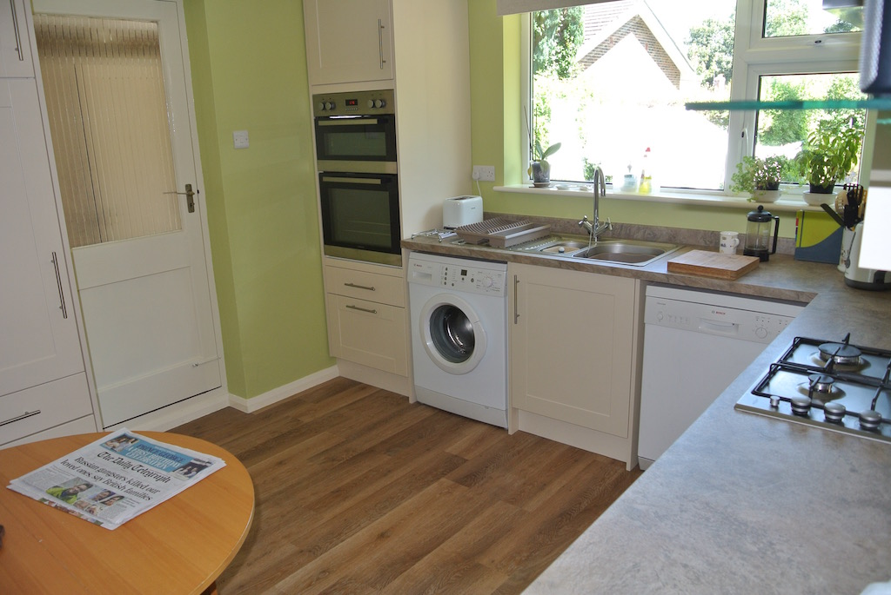
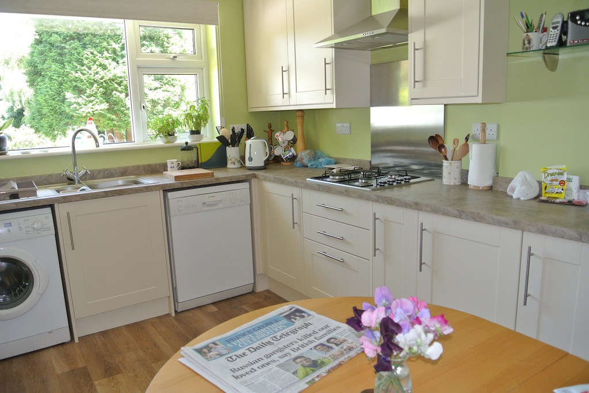

At the end of 2013 we decided that it was time to give our kitchen a bit of an update. In fact, to have it completely ripped out and replaced. Although we have always said that we will move in two years, we now think that we should get five years use out of a new kitchen. So at the beginning of January 2014 we started looking at suppliers and what they could provide in the way of a complete service. We approached Wickes and Howden in Broadwater and Bowen in Hove, looking at their range of units and asking them to call so as to give us an outline plan and estimate.
They all visited us, measured up and discussed options, but we didn't hear anything further from Wickes. At the end of the day, there was little to choose between the units, but Howden were cheaper. However, we had an estimate for the units from Howden, electrical work from an electrician, flooring from a floorer and the rest from a fitter (although he would manage the other suppliers), whereas the Bowen contractor would do the lot.
Tony Kennard started work on May 7th, after we had cleared out the kitchen and moved the washing machine and dishwasher into the garage. The first two photos show it as Tony found it. The second two show how it was at the end of the day!
The final two photos show the final result. We think it was worth using a fridge in the garage and washing up in the bathroom for a couple of weeks.
 © David James 2015 Last updated: 27th December 2015